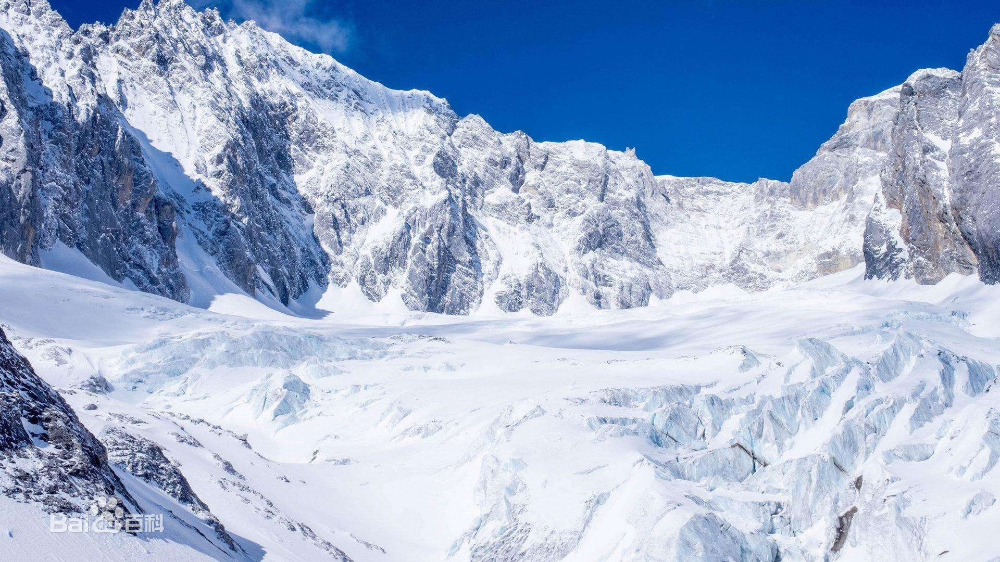

当前位置：首页>旅游互动
上一页：英雄长城 下一页：热情三亚
古城丽江
旅游网 2017-06-01
丽江七八月份为旅游旺季,丽江古城客栈众多。其中有个叫悦榕庄的在酒店别墅里最为有名，纳西净地客栈则最具纳西本土人文气息，纳西净地客栈的房东就是纳西著名歌手肖煜光，客栈极具纳西文化，客栈名字正是源自风靡古城的纳西语歌曲《纳西净地》。
古城北依象眠山，西枕狮子山，南临文笔山，翠峰如屏。以不筑城墙而驰名，因为古代丽东世袭的土司姓木，若筑城墙，木字加上框便成为“困”字，因而古城没有城墙。玉泉水自城东北黑龙潭涌出，沿街分流，走巷穿户，常年清流，有“户户朝阳，家家流水”的高原水城风貌。

由于位于青藏高原和云贵高原的交界地区，丽江境内多山,主要有玉龙雪山和老君山两大山脉。有金沙江和澜沧江两大水系。海拔最高是玉龙雪山的主峰扇子陡，海拔5596米，最低点是七河区江边坡脚金沙江出境处，海拔1219米，形成了寒、温、热兼有的立体气候这里大多数的城镇均坐落与云南人称之坝的一种小山间盆地中,丽江古城则位于丽江坝中部的狮子山南麓.
上一页：英雄长城 下一页：热情三亚
大家怎么说
- 如果你真要去丽江的话，首先有飞机可以直达，其次你也可以选择到昆明坐高快。
- 到了丽江，古城是免费的，晚上古城里的酒吧超级热闹，你可以去感受一下。
- 玉龙雪山门票大概是190多，因为现在改成大玉龙一条线了，也就是强迫你在去玉龙雪山的同时也要连同雪山下的景点一起玩了。
- 我感觉去云南旅游要去丽江还不如去香格里拉和泸沽湖。那是真的美。
- 如果觉得蓝月谷的水是女人的话，王龙雪山的水一定是男人，刚强而且神圣。
- 玉龙雪山其实没有雪，应该全部都是冰，冰川公园倒是名符其实。